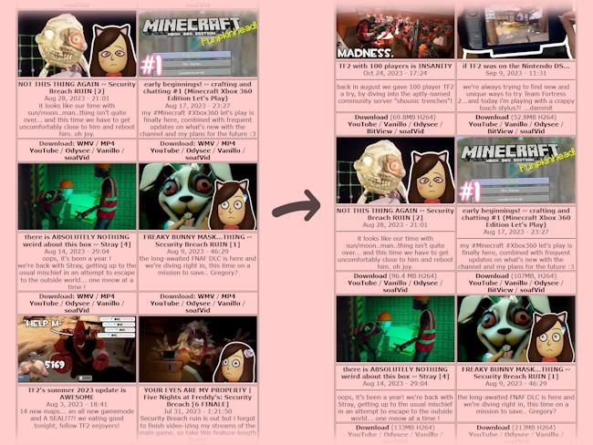

video page updates

i know it's been a while since i posted here but here's an update!
goodbye, WMV !
so i've uploaded my videos to YouTube, Odysee, Vanillo, PeerTube and BitView, along with a couple other places, but i've also been publishing 360p H264 videos right on this site, along with 240p 4:3 WMVs for maximum compatibility with older devices.
i've now realised, part of why i haven't been good with updating this website's copy of the videos is due to the time it takes to hand-edit and produce 4:3 edits for the WMV variants that realistically nobody will need, since you can decode H264 web video, especially standard-def 360p ones, on everything from a Wii U Browser to Windows 2000!
this also comes with the benefit of saving nearly 2GB of precious VPS storage space. i've used the extra space on the videos page to show the file size before you click to download.
efficiency 100
while H264 is an old codec and thus not the most efficient out there anymore, it also comes with the upside of the encoding side of things being very mature, making it possible to pretty easily squeeze out every bit of efficiency possible, which is worth it for the sheer compatbility of the codec in my opinion !
soo, while those versions of my videos won't look great on my 32-inch 4K monitor at my desk, for example, that's not what it's for. the 4K YouTube uploads (or better yet, the original, Source-quality renders on my Patreon or Ko-fi pages!) are for times where quality matters. having this option around, however, is pretty awesome as this allows you to watch soafen videos on places where even YouTube won't work anymore, 360p H264 video is pretty dang versatile!
be sure to send a tweet or write an e-mail showing soafen videos running on your weird devices, like a Blackberry Curve or the PS4's captive portal login browser, and maybe i'll feature some in my next blog post :3